TEAM21 — L'ERP complet pour votre entreprise
TEAM21 est un ERP conçu pour centraliser la gestion des projets, des ressources humaines, de la relation client et de la finance. Lancez et pilotez toute votre activité depuis un seul outil.
Si vous avez des questions qui dépassent le cadre de cette documentation, n'hésitez pas à nous contacter via le Centre de support.
Cette documentation présente, module par module, l'ensemble des fonctionnalités de TEAM21 — à quoi chaque module sert, qui peut y accéder, comment il fonctionne concrètement, et quelles bonnes pratiques adopter.
Structure de la documentation
- À quoi ça sert / Pour qui — objectif du module et à qui il s'adresse.
- Comment ça fonctionne — le déroulé étape par étape.
- Ce que vous y trouvez — colonnes, actions et informations disponibles.
- Connecté avec — les liens avec les autres modules.
- Astuce — un conseil pour une utilisation optimale.
Rôles utilisateurs
Quatre niveaux d'accès, utilisés de façon transversale dans tous les modules.
| Rôle | Périmètre |
|---|---|
| Super Admin | Accès complet à l'ensemble des données et paramètres de l'entreprise. |
| Admin | Accès à son périmètre — projets, équipe ou clients gérés. |
| Employé / Team Member | Accès à ses propres données — tâches assignées, projets où il est membre. |
| Client | Consultation seule de ce qui le concerne. Les modules internes ne lui sont pas accessibles. |
Tableau de bord
Votre cockpit quotidien pour piloter l'activité de l'entreprise en un coup d'œil.
À quoi ça sert
Le Tableau de bord est la page d'accueil de TEAM21. En un seul coup d'œil, il donne une vue d'ensemble de l'activité — projets, tâches, équipe, clients, anniversaires et absences.
Pour qui
| Rôle | Périmètre | Accès |
|---|---|---|
| Super Admin | Vue complète de l'entreprise | Oui |
| Admin | Vue de son périmètre | Oui |
| Employé | Vue de ses propres données | Oui |
| Client | — | N/A |
Comment ça fonctionne
- 1Collecte — TEAM21 agrège automatiquement les données de tous les modules.
- 2Analyse — les indicateurs sont calculés et organisés par catégorie.
- 3Visualisation — les informations clés s'affichent sous forme de tableaux et de graphiques.
- 4Action — vous prenez rapidement les bonnes décisions.
Ce que vous y trouvez
- 4 KPI clés — nombre de projets totaux, tâches totales, utilisateurs et clientèles.
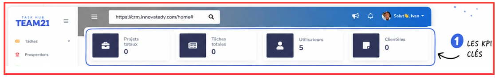
- Graphiques d'avancement — Aperçu des projets et des tâches, répartis par statut.
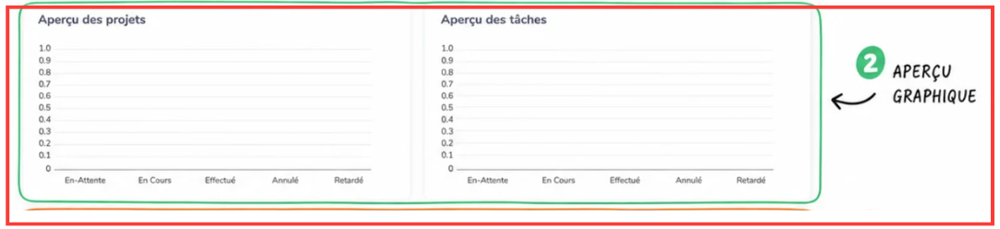
- Vie d'équipe — prochains anniversaires, anniversaires d'adhésion et membres en congé.
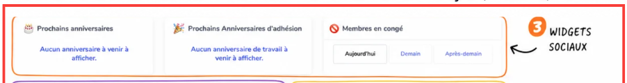
- Raccourcis vers vos modules — accès direct vers Projets, Tâches, etc.
- Todo liste rapide — ajout d'une tâche en un champ, sans quitter le tableau de bord.
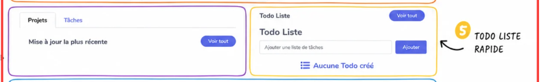
- Suivi détaillé des tâches — tableau filtrable par projet, statut, dates d'échéance et recherche.
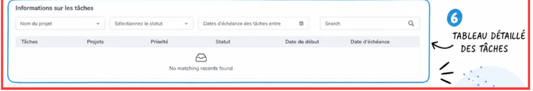
Todo Liste
Créez et gérez vos tâches personnelles en quelques secondes.
À quoi ça sert
La Todo Liste permet de noter rapidement des tâches personnelles, indépendantes des projets, pour ne rien oublier au fil de la journée.
Comment ça fonctionne
- 1Cliquez sur Todo Liste dans le menu latéral.
- 2Saisissez un intitulé clair et précis.
- 3Cliquez sur le bouton Ajouter.
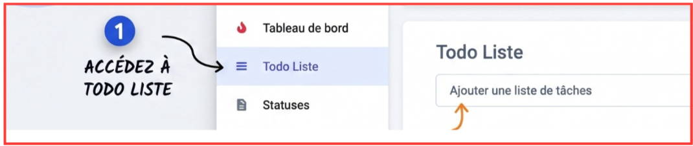
- 4La tâche apparaît immédiatement dans la liste.
- 5Sans tâche, le message Aucune Todo créée s'affiche.
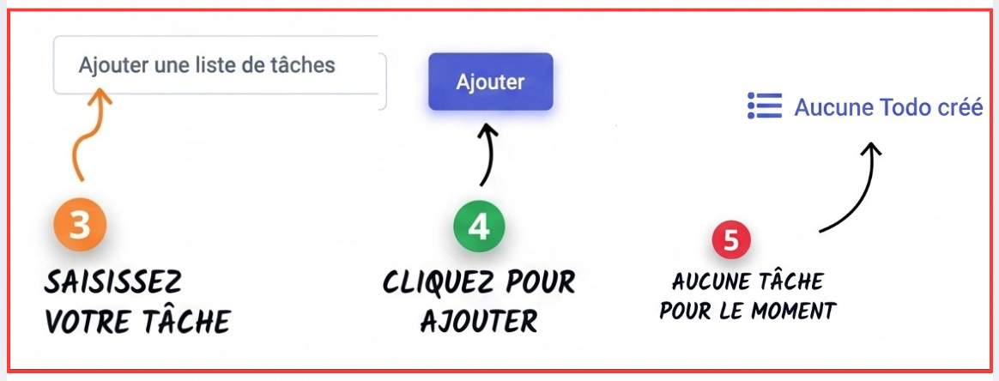
Bonnes pratiques
- Clarté — privilégiez des titres courts et précis.
- Action — commencez par un verbe (« Appeler le client »).
- Habitude — consultez votre liste chaque matin pour rester organisé.
- Nettoyage — supprimez régulièrement les tâches terminées.
Problèmes fréquents
| Problème | Solution |
|---|---|
| Liste vide | Ajoutez une première tâche. |
| Intitulé vague | Soyez précis dans la formulation. |
| Trop de tâches accumulées | Supprimez les tâches terminées régulièrement. |
Statuses
Configurez les statuts utilisés dans vos projets et tâches.
À quoi ça sert
Le module Statuses permet de définir et personnaliser les statuts utilisés à travers TEAM21 pour qualifier l'avancement des projets et des tâches.
Ce que vous y trouvez
- Ajouter un statut — bouton Add Statuses pour créer un nouveau statut.
- Rechercher — champ Search pour retrouver un statut spécifique.
- Liste des statuts — l'ensemble des statuts avec leur type et leur couleur.
- Actions — menu à trois points pour modifier ou supprimer un statut.
Statuts par défaut
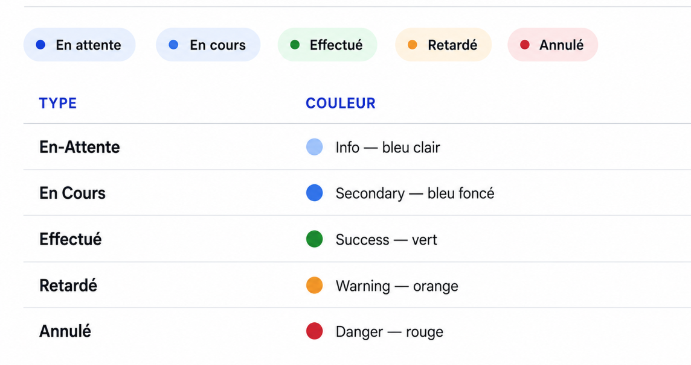
| Type | Couleur |
|---|---|
| En-Attente | Info — bleu clair |
| En Cours | Secondary — bleu foncé |
| Effectué | Success — vert |
| Retardé | Warning — orange |
| Annulé | Danger — rouge |
Projets
Gérez tous vos projets d'entreprise en un seul endroit.
À quoi ça sert
Le module Projets permet de créer, planifier et suivre tous les projets de l'entreprise. C'est le cœur de l'activité — c'est là que se passe l'essentiel du travail quotidien.
Pour qui
| Rôle | Périmètre |
|---|---|
| Super Admin | Tous les projets |
| Admin | Projets qu'il gère |
| Employé | Projets où il est assigné |
| Client | Consultation seule |
Ce que vous y trouvez
- Affichage — basculez entre vue en grille et vue en liste.
- Nouveau projet — bouton Créer un projet.
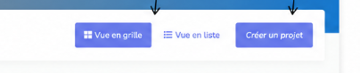
- Filtres par statut — Tous, En-Attente, En Cours, Effectué, Annulé, Retardé.
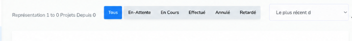
- Tri — par date de création, la plus récente d'abord par défaut.
- 5 vues — Projets, Favoris, Calendrier, Diagramme de Gantt, Bulk Upload.
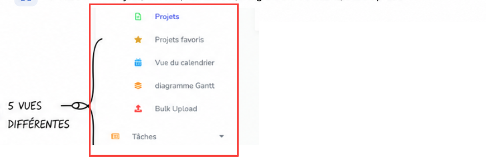
Connecté avec
- Tâches — chaque projet contient des tâches.
- Clientèles — un projet est lié à un client.
- Contrats — les contrats associés au projet.
- Suivi du temps — le temps passé par projet.
Un nouveau client commande un site web :
- Je crée le projet « Site web Dupont ».
- J'assigne 3 développeurs et 1 designer.
- Je fixe une deadline à 3 mois.
- L'équipe crée les tâches nécessaires.
- Le projet est livré en temps et en heure.
Projets favoris
Retrouvez vos projets prioritaires en un clic.
- Accès — via le sous-menu Projets › Projets favoris.
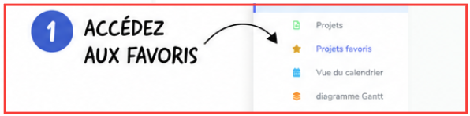
- Marquer un favori — cliquez l'icône étoile pour l'ajouter.
- Créer un projet — le bouton reste disponible depuis cette vue.
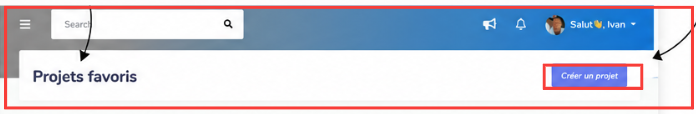
Vue du calendrier
Visualisez vos projets sur un calendrier mensuel.
- Accès — via le sous-menu Projets › Vue du calendrier.
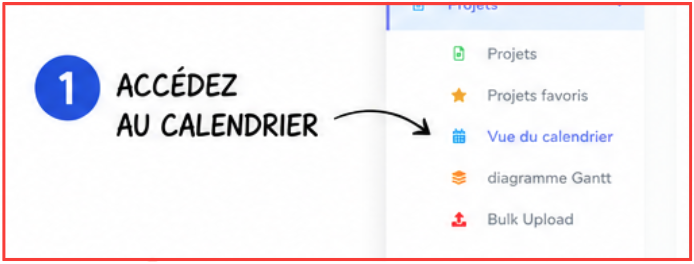
- Navigation — flèches précédent / suivant entre les mois.
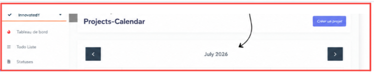
- Projets dans le temps — ils apparaissent aux dates correspondantes de leur cycle de vie.
Bulk Upload
Importez plusieurs projets en une seule opération via un fichier CSV.
- 1Lisez attentivement les instructions lors de la préparation des données.
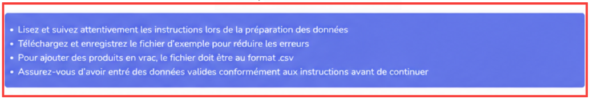
- 2Téléchargez le fichier d'exemple pour réduire les erreurs.
- 3Choisissez le type d'opération — Téléchargement ou Mise à jour.
- 4Sélectionnez votre fichier
.csvpuis cliquez sur Soumettre.
Des modèles et instructions sont disponibles en bas de page : exemple de fichier, instructions de téléchargement groupé, exemple de mise à jour, instructions de mise à jour en masse.
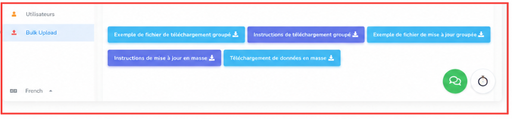
Tâches
Suivez et filtrez toutes les tâches de vos projets.
À quoi ça sert
Les tâches sont les actions concrètes qui composent les projets. Chaque tâche a un responsable, une priorité, une échéance et un statut — c'est l'unité de travail de base de TEAM21.
Pour qui
| Rôle | Périmètre |
|---|---|
| Super Admin | Toutes les tâches |
| Admin | Tâches de ses projets |
| Employé | Tâches qui lui sont assignées |
| Client | Non applicable |
Ce que vous y trouvez
- Créer une tâche — bouton Créer une tâche.
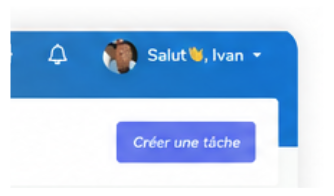
- Filtres — par nom du projet, statut, dates d'échéance, client.
- 6 colonnes — Tâches, Projets, Utilisateurs, Clientèles, Statut, Action.
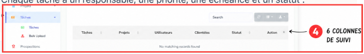
Statuts d'une tâche
| Statut | Signification |
|---|---|
| Effectuée | Tâche terminée avec succès. |
| En cours | Tâche en cours de réalisation. |
| En attente | En attente d'une action ou d'une dépendance. |
| Retardée | Tâche en retard sur la deadline. |
Connecté avec
- Projets — chaque tâche appartient à un projet.
- Employés — assignation des tâches.
- Suivi du temps — temps passé sur chaque tâche.
- Pièces jointes — fichiers et documents liés.
- Commentaires — discussions et retours sur la tâche.
Créer la maquette (Effectuée) → Développer le site (En cours) → Rédiger les contenus (En attente) → Tests et corrections (Retardée) → Livraison au client.
Prospections
Suivez vos prospects du premier contact à la signature.
À quoi ça sert
Le module Prospections suit chaque prospect depuis le premier contact jusqu'à la signature. Le pipeline visuel aide à suivre l'avancement commercial et à ne perdre aucune opportunité.
Étapes du pipeline
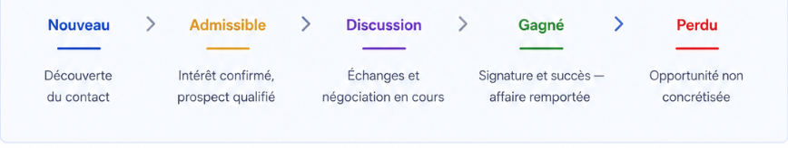
| Étape | Signification |
|---|---|
| Nouveau | Découverte du contact. |
| Admissible | Intérêt confirmé, prospect qualifié. |
| Discussion | Échanges et négociation en cours. |
| Gagné | Signature — affaire remportée. |
| Perdu | Opportunité non concrétisée. |
Pour qui
| Rôle | Périmètre |
|---|---|
| Super Admin | Tous les prospects |
| Admin | Prospects de son équipe |
| Commercial | Ses propres prospects |
| Client | Non applicable |
Connecté avec
- Clientèles — les prospects sont liés à une fiche client.
- Projets — un prospect gagné devient un projet.
- Contrats — transformation en contrat après signature.
- Rapports — analyses du pipeline commercial.
- Le prospect remplit un formulaire de contact.
- Le besoin est confirmé — prospect qualifié.
- RDV, devis et négociation.
- Le client signe le contrat.
Fiche de paie
Consultez et gérez les bulletins de salaire de vos équipes.
À quoi ça sert
Le module Fiche de paie centralise l'émission et la consultation des bulletins de salaire des membres de l'équipe.
Ce que vous y trouvez
- Créer une fiche — bouton +Create Payslip.
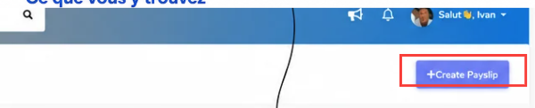
- Rechercher un salarié — champ Search.
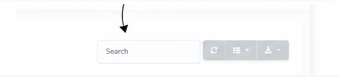
- Colonnes disponibles — Fiche de paie, Nom d'utilisateur, Bulletin du mois, Salaire de base, Total des gains, Déductions, Salaire net, Date de paiement, Méthode de paiement, Statut.
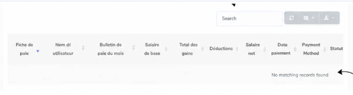
Réunions
Organisez et suivez toutes vos réunions d'équipe.
À quoi ça sert
Le module Réunions permet de planifier, organiser et retrouver toutes les réunions de l'équipe, internes ou avec des clients.
Ce que vous y trouvez
- Créer une réunion — bouton Créer une réunion.
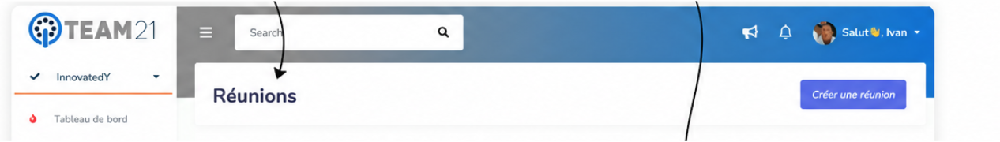
- Filtrer par dates — champ Meeting Dates Between Range.
- Colonnes disponibles — Titre, Créé par, Utilisateurs, Clientèles, Type, Plateforme, Lien et champs de planification.
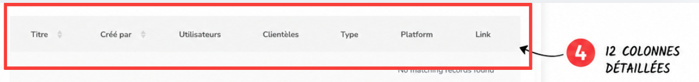
Chat
Communiquez avec votre équipe en temps réel.
À quoi ça sert
Le Chat intégré permet d'échanger en temps réel avec les membres de l'équipe, sans quitter TEAM21.
Ce que vous y trouvez
- Boîte de discussion — zone d'échange centrale.
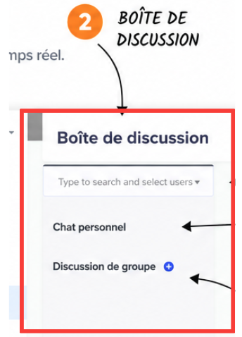
- Rechercher un utilisateur — champ Type to search and select users.
- Discussion privée — conversation en tête-à-tête avec un collègue.
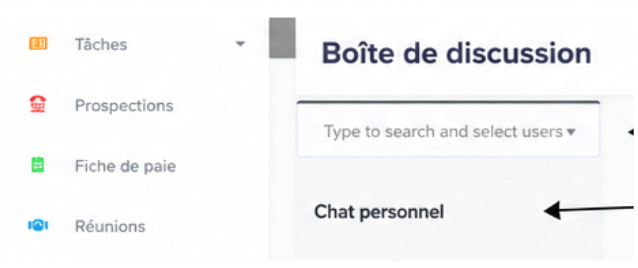
- Créer un groupe — bouton + à côté de Discussion de groupe.
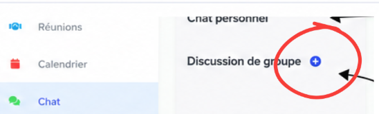
Utilisateurs
Gérez les membres et les rôles de votre équipe.
À quoi ça sert
Le module Utilisateurs permet de gérer les membres de l'équipe — leurs rôles, leurs droits d'accès et leur charge de travail.
Rôles disponibles
- Super Admin — accès complet à l'entreprise.
- Admin — gestion d'un périmètre défini.
- Team Member — accès à ses propres données et tâches assignées.
Ce que vous y trouvez
- Identité — nom, email et photo de chaque membre.
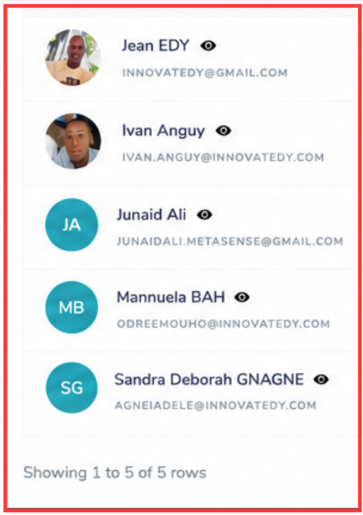
- Rôle — badge indiquant le rôle attribué.
- Charge de travail — nombre de projets, tâches et prospections assignés.
- Statut — indique si le compte est actif.
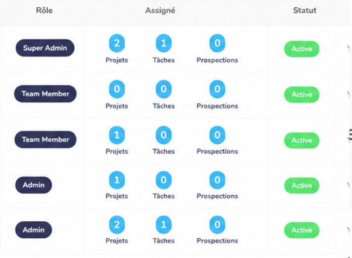
Clientèles
Gérez tous vos clients et leurs informations.
À quoi ça sert
Le module Clientèles centralise les fiches de tous les clients de l'entreprise — coordonnées, entreprise associée, responsable de compte et statut.
Ce que vous y trouvez
- Ajouter un client — bouton Ajouter un client.
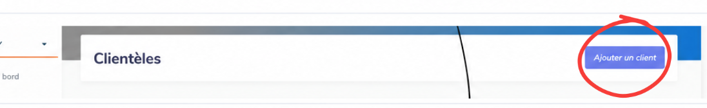
- Rechercher — champ Search.
- 5 colonnes — Clientèles, Entreprise, Assigné, Statut, Action.
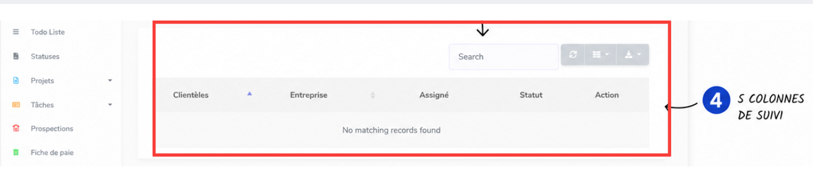
Base de connaissances
Centralisez et partagez le savoir de votre entreprise.
À quoi ça sert
La Base de connaissances regroupe les articles, procédures et ressources internes de l'entreprise, organisés par groupe.
Ce que vous y trouvez
- Ajouter un article — bouton Ajouter un article et gestion des Groupes d'articles.
- Filtrer — par groupe et par dates.
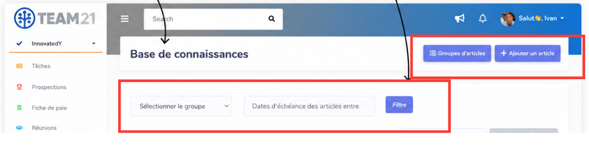
- 3 colonnes — Titre, Nom de groupe, Date d'attribution.
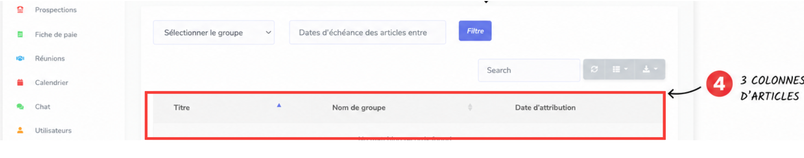
Contrats
Centralisez et suivez tous vos contrats clients.
À quoi ça sert
Le module Contrats centralise tous les contrats signés ou en cours avec les clients, liés à un projet et à une valeur financière.
Ce que vous y trouvez
- Créer un contrat — boutons Ajouter un type de contrat et Créer des contrats.
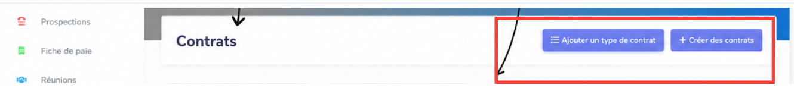
- Filtrer — par projet et par utilisateurs.
- Colonnes — Identifiant, Titre, Client, Projet, Type de contrat, Valeur, Statut signé, Action.
Demandes de congé
Gérez les absences et les congés de votre équipe.
À quoi ça sert
Ce module permet aux collaborateurs de soumettre des demandes de congé et aux responsables de les valider ou de les refuser.
Ce que vous y trouvez
- Soumettre une demande — bouton Demande de congé.
- Rechercher — champ Search.
- 5 colonnes — Nom, Durée du congé, Raison, Statut, Action.
Suivi du temps
Mesurez le temps passé sur chaque projet et tâche.
À quoi ça sert
Le Suivi du temps permet d'enregistrer et d'analyser le temps consacré par chaque collaborateur à ses projets et tâches.
Ce que vous y trouvez
- 4 indicateurs — temps du jour, durée totale de la semaine, du mois et de l'année.
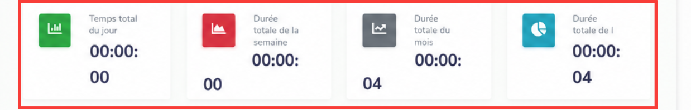
- Filtrer — par dates et par utilisateurs.
- 8 colonnes — Utilisateurs, Heure de début, Heure de fin, Durée, Message, Projet, Date, Action.
- Chronomètre intégré — icône en bas à droite pour démarrer / arrêter un chronométrage en direct.
- Saisie manuelle — bouton Ajouter une feuille de temps.
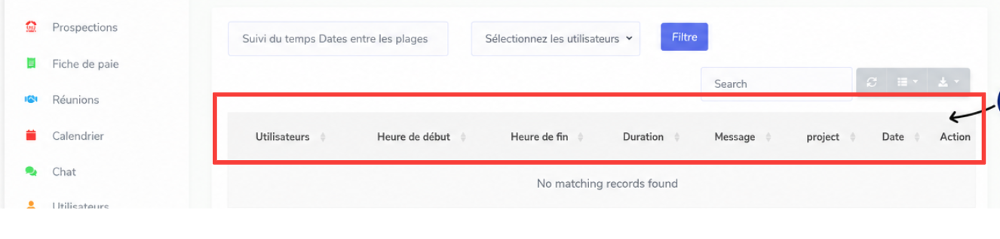
Notes
Prenez et centralisez vos notes de travail.
À quoi ça sert
Le module Notes offre un espace simple pour rédiger et conserver des notes de travail personnelles, accessibles à tout moment.
Ce que vous y trouvez
- Créer une note — bouton Créer une note.
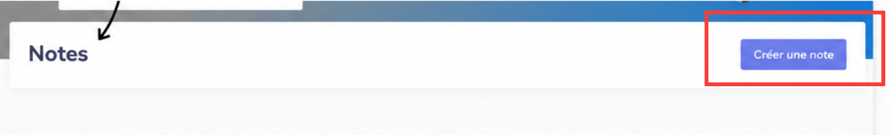
- État vide — le message Aucune note trouvée s'affiche lorsqu'aucune note n'existe.
Mon profil
Personnalisez vos informations et vos préférences.
À quoi ça sert
La page Profil est l'espace personnel de chaque utilisateur pour gérer ses informations et ses préférences dans TEAM21.
Ce que vous y trouvez
- Photo de profil — champ Choose file pour ajouter ou modifier votre photo.
- Informations personnelles — Prénom, Nom, E-mail, Contact, Date de naissance, Date d'adhésion, Genre, Description.
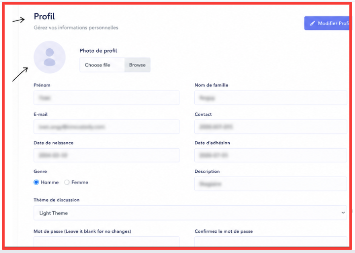
- Thème — choix entre thème clair et thème sombre.
- Mot de passe — champs Mot de passe et Confirmer le mot de passe. Laissez vide pour ne pas modifier.
- Enregistrer — bouton Modifier Profil puis Sauvegarder les modifications.
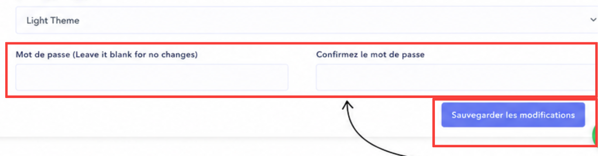